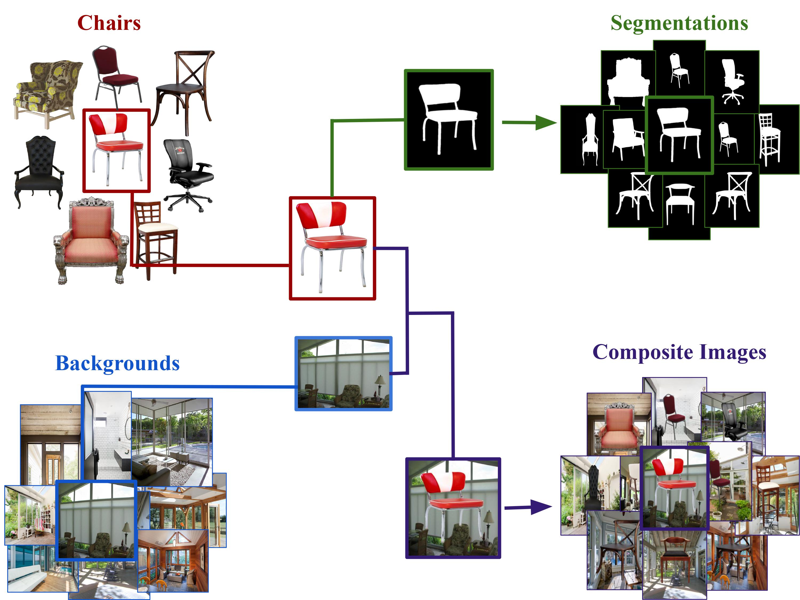

|
I am a senior staff research scientist at Google Research, where I work on computer vision and machine learning. At Google I've worked on Portrait Light, Lens Blur, HDR+, Jump, Portrait Mode, Glass, and NeRF. I did my PhD at UC Berkeley, where I was advised by Jitendra Malik and funded by the NSF GRFP. I've received the C.V. Ramamoorthy Distinguished Research Award and the PAMI Young Researcher Award. |

|
|
I'm interested in computer vision, machine learning, optimization, and image processing. Much of my research is about inferring the physical world (shape, motion, color, light, etc) from images. Representative papers are highlighted. |
  |
Jonathan T. Barron, Jitendra Malik CVPR, 2013 (Oral Presentation) supplement / bibtex / talk / keynote (or powerpoint, PDF) / code & data By embedding mixtures of shapes & lights into a soft segmentation of an image, and by leveraging the output of the Kinect, we can extend SIRFS to scenes.
|
|  |
Leticia Pinto-Alva, Ian K. Torres, Rosangel Garcia, Ziyan Yang, Vicente Ordonez Arxiv, 2021 supplement / bibtex Boundary cues (like occlusions and folds) can be used for shape reconstruction, which improves object recognition for humans and computers. |

 |
Jonathan T. Barron, Jitendra Malik ECCV, 2012 supplement / bibtex / poster / video This paper is subsumed by SIRFS. |
|
|


|
Feel free to steal this website's source code,
just add a link back to my website.
Do not scrape the HTML from the deployed instance of this website at http://jonbarron.info,
as it includes analytics tags that you do not want on your own website — use the github code instead.
If you'd like your new page linked to from here, submit a pull request adding yourself.
✩
✩
|